9 Lattice
The figures of Deepayan Sarkar’s Lattice: Multivariate Data Visualization with R (Springer 2008), rebuilt with cljplot2 - a section per chapter, a block per figure. The R code of every figure is on the book’s figures page; each block links its figure there.
The figures show the same information as the originals; styling differs, and the code is cljplot2’s own (plain plot maps, data prepared in Clojure). Lattice’s banking (aspect = "xy") is replaced by the image size, its strips by cljplot2 facet strips. Data are the book’s, exported from R (see the dataset notes under each figure).
Not here: chapter 12 (interactive displays) and a few figures outside the medium - each is listed in its chapter.
(ns galleries.lattice
(:require [clojure.string :as str]
[fastmath.core :as m]
[fastmath.ml.regression :as regression]
[fastmath.random :as r]
[fastmath.stats :as stats]
[cljplot2.chart :as chart]
[cljplot2.core :as plot]
[cljplot2.data.levels :as levels]
[cljplot2.data.shingle :as shingle]
[notebook-utils :as nu]))(defn- figure-url
"Permalink of LMDVR figure `chapter`.`figure` on the book's figures page."
[chapter figure]
(format "http://lmdvr.r-forge.r-project.org/figures/figures.html?chapter=%02d;figure=%02d_%02d;theme=stdColor;code=right"
chapter chapter figure))#'galleries.lattice/figure-url(def chem97 (nu/dataset :chem97))(def oats (nu/dataset :oats))(def barley (nu/dataset :barley))(def titanic (nu/dataset :titanic))(def faithful (nu/dataset :faithful))(def gvhd10 (nu/dataset :gvhd10))(def quakes (nu/dataset :quakes))(def va-deaths (nu/dataset :va-deaths))(def postdoc (nu/dataset :postdoc))(def earthquake (nu/dataset :earthquake))(def seatac (nu/dataset :seatac-weather))(def us-arrests (nu/dataset :us-arrests))(def states (nu/dataset :states))(def mtcars (nu/dataset :mtcars))9.1 Chapter 1 - Introduction
9.1.1 Fig 1.1 Histograms
GCSE scores of the A-level chemistry candidates, a panel per A-level score.
Source: Lattice Fig 1.1. Data: A-level chemistry scores, England 1997, R mlmRev package Chem97 (Yang et al. 2002); licence: GPL (>= 2) (mlmRev).
(plot/render-image
{:data chem97
:mapping {:x :gcsescore :facet :score}
:charts [(chart/histogram)]
:facets {:columns 3}
:labels {:x "gcsescore" :y "Percent of Total"}}
{:width 800 :height 500})
9.1.2 Fig 1.2 Densities
Source: Lattice Fig 1.2. Data: A-level chemistry scores, England 1997, R mlmRev package Chem97 (Yang et al. 2002); licence: GPL (>= 2) (mlmRev).
(plot/render-image
{:data chem97
:mapping {:x :gcsescore :facet :score}
:charts [(chart/density)]
:facets {:columns 3}
:labels {:x "gcsescore" :y "Density"}}
{:width 800 :height 500})
9.1.3 Fig 1.3 Grouped densities
The six densities in one panel, coloured by score; the score is a number, declared categorical for the colours.
Source: Lattice Fig 1.3. Data: A-level chemistry scores, England 1997, R mlmRev package Chem97 (Yang et al. 2002); licence: GPL (>= 2) (mlmRev).
(plot/render-image
{:data chem97
:mapping {:x :gcsescore :color :score}
:scales {:color {:type :categorical}}
:charts [(chart/density)]
:labels {:x "gcsescore" :y "Density"}}
{:width 700 :height 450})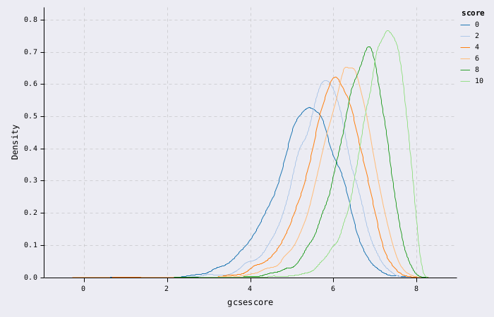
9.1.4 Fig 1.4 Two plots on a page
Source: Lattice Fig 1.4. Data: A-level chemistry scores, England 1997, R mlmRev package Chem97 (Yang et al. 2002); licence: GPL (>= 2) (mlmRev).
(plot/render-image
(plot/arrange [{:data chem97
:mapping {:x :gcsescore :facet :score}
:charts [(chart/histogram)]
:facets {:columns 2}
:labels {:x "gcsescore" :y "Percent of Total"}}
{:data chem97
:mapping {:x :gcsescore :color :score}
:scales {:color {:type :categorical :title "score"}}
:charts [(chart/density)]
:labels {:x "gcsescore" :y "Density"}}]
{:columns 1})
{:width 600 :height 800})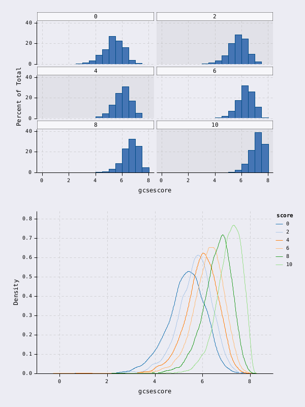
9.2 Chapter 2 - A Technical Overview of lattice
9.2.1 Fig 2.1 Two conditioning variables
Oat yield by nitrogen, a panel per variety (columns) and block (rows): points joined by lines.
Source: Lattice Fig 2.1. Data: Oats yields: split-plot field trial, R MEMSS package Oats (Yates 1935; Pinheiro & Bates 2000); licence: GPL (>= 2) (MEMSS).
(plot/render-image
{:data oats
:mapping {:x :nitro :y :yield :facet-col :variety :facet-row :block}
:charts [(chart/line) (chart/scatter)]
:labels {:x "nitro" :y "yield"}}
{:width 700 :height 800})
9.2.2 Fig 2.2 One block
Source: Lattice Fig 2.2. Data: Oats yields: split-plot field trial, R MEMSS package Oats (Yates 1935; Pinheiro & Bates 2000); licence: GPL (>= 2) (MEMSS).
(plot/render-image
{:data (filterv #(= "I" (:block %)) oats)
:mapping {:x :nitro :y :yield :facet :variety}
:charts [(chart/line) (chart/scatter)]
:facets {:columns 3}
:labels {:x "nitro" :y "yield"}}
{:width 800 :height 450})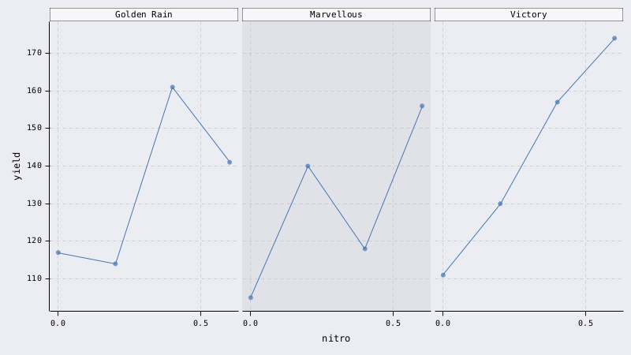
9.2.3 Fig 2.3 Banked to 45 degrees
Lattice’s aspect = "xy" chooses the panel shape from the slopes of the lines; here the image is narrow instead.
Source: Lattice Fig 2.3. Data: Oats yields: split-plot field trial, R MEMSS package Oats (Yates 1935; Pinheiro & Bates 2000); licence: GPL (>= 2) (MEMSS).
(plot/render-image
{:data oats
:mapping {:x :nitro :y :yield :facet-col :variety :facet-row :block}
:charts [(chart/line) (chart/scatter {:size 3})]
:labels {:x "nitro" :y "yield"}}
{:width 380 :height 800})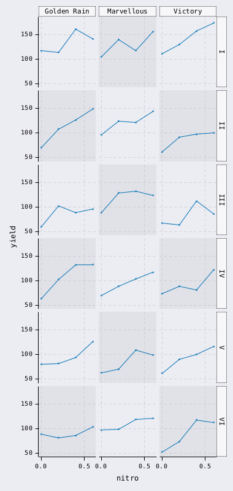
9.2.4 Fig 2.4 Eighteen panels in three rows
Source: Lattice Fig 2.4. Data: Oats yields: split-plot field trial, R MEMSS package Oats (Yates 1935; Pinheiro & Bates 2000); licence: GPL (>= 2) (MEMSS).
(plot/render-image
{:data oats
:mapping {:x :nitro :y :yield :facet #(str (:block %) " " (:variety %))}
:charts [(chart/line) (chart/scatter {:size 3})]
:facets {:columns 6}
:labels {:x "nitro" :y "yield"}}
{:width 1000 :height 550})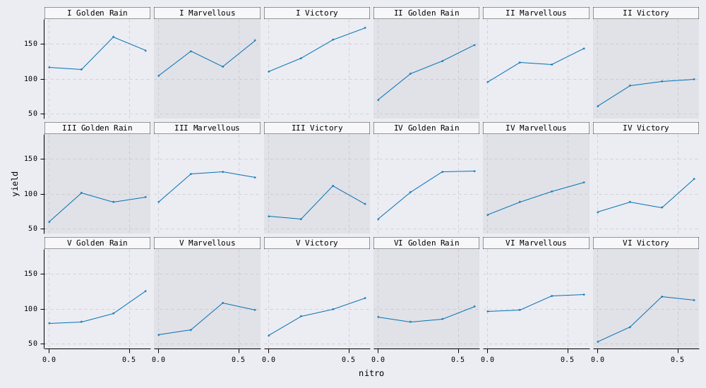
9.2.5 Fig 2.5 Gaps between blocks
Lattice widens chosen gaps between panels (between); here each block is its own plot, arranged.
Source: Lattice Fig 2.5. Data: Oats yields: split-plot field trial, R MEMSS package Oats (Yates 1935; Pinheiro & Bates 2000); licence: GPL (>= 2) (MEMSS).
(plot/render-image
(plot/arrange (for [block ["I" "II" "III" "IV" "V" "VI"]]
{:data (filterv #(= block (:block %)) oats)
:mapping {:x :nitro :y :yield :facet :variety}
:charts [(chart/line) (chart/scatter {:size 3})]
:scales {:y {:domain [50 180]}}
:facets {:columns 3}
:labels {:title (str "Block " block) :x nil :y nil}})
{:columns 2})
{:width 1000 :height 700})
9.2.6 Fig 2.6 Dot plot
Barley yield of each variety at six sites, the two years in two shapes. Sites, varieties and years keep R’s factor order (nu/levels); lattice fills panels from the bottom, so the sites run top-down reversed.
Source: Lattice Fig 2.6. Data: Barley yields, Minnesota 1931-1932, R lattice package barley (Immer et al. 1934; Fisher 1971; Cleveland 1993); licence: GPL (>= 2) (lattice).
(plot/render-image
{:data barley
:mapping {:x :yield :y :variety :shape :year :facet :site}
:scales {:y {:domain (nu/levels :barley :variety)}
:facet {:domain (vec (rseq (nu/levels :barley :site)))}
:shape {:domain (nu/levels :barley :year)}}
:charts [(chart/scatter)]
:facets {:columns 1}
:theme {:text {:tick-label {:size 8}}}
:labels {:x "yield" :y nil}}
{:width 600 :height 800})
9.2.7 Fig 2.7 Groups within panels
Source: Lattice Fig 2.7. Data: Oats yields: split-plot field trial, R MEMSS package Oats (Yates 1935; Pinheiro & Bates 2000); licence: GPL (>= 2) (MEMSS).
(plot/render-image
{:data oats
:mapping {:x :nitro :y :yield :shape :variety :group :variety :facet :block}
:charts [(chart/line {:color :darkgrey}) (chart/scatter {:color :black :size 6})]
:facets {:columns 6}
:labels {:title "Yield of three varieties of oats - a 3 x 4 split plot experiment with 6 blocks"
:x "Nitrogen concentration (cwt/acre)" :y "Yield (bushels/acre)"}}
{:width 1000 :height 400})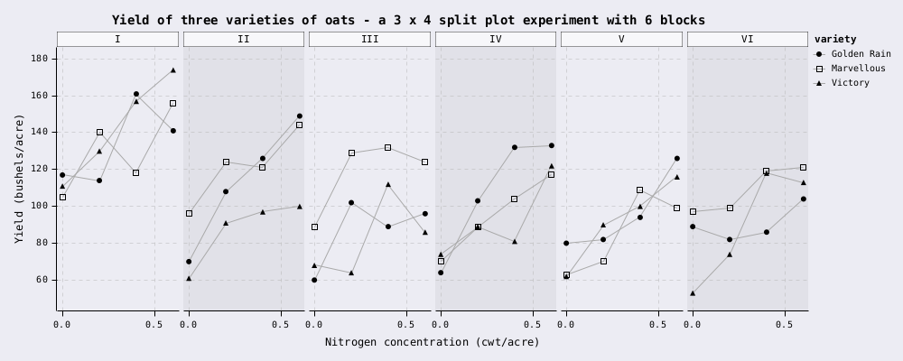
9.2.8 Fig 2.8 Stacked bars
Titanic passengers by class, stacked by survival, a panel per age and sex.
Source: Lattice Fig 2.8. Data: Titanic passengers and crew by class, sex, age and survival, R datasets package Titanic (Dawson 1995); licence: Part of R (GPL-2 | GPL-3).
(def titanic-panels ["Child Male" "Child Female" "Adult Male" "Adult Female"])(plot/render-image
{:data titanic
:mapping {:x :n :y :class :color :survived :facet #(str (:age %) " " (:sex %))}
:scales {:facet {:domain titanic-panels}}
:charts [(chart/bar {:position :stack})]
:facets {:columns 4}
:theme {:panel {:grid {:x :none :y :none}}}
:labels {:x "Freq" :y nil}}
{:width 900 :height 350})
9.2.9 Fig 2.9 Free scales
Each panel its own count axis, so the small groups are readable.
Source: Lattice Fig 2.9. Data: Titanic passengers and crew by class, sex, age and survival, R datasets package Titanic (Dawson 1995); licence: Part of R (GPL-2 | GPL-3).
(plot/render-image
{:data titanic
:mapping {:x :n :y :class :color :survived :facet #(str (:age %) " " (:sex %))}
:scales {:facet {:domain titanic-panels}}
:charts [(chart/bar {:position :stack})]
:facets {:columns 4 :scales {:x :free}}
:theme {:panel {:grid {:x :none :y :none}}}
:labels {:x "Freq" :y nil}}
{:width 900 :height 350})
9.2.10 Fig 2.10 Vertical grid lines
Source: Lattice Fig 2.10. Data: Titanic passengers and crew by class, sex, age and survival, R datasets package Titanic (Dawson 1995); licence: Part of R (GPL-2 | GPL-3).
(plot/render-image
{:data titanic
:mapping {:x :n :y :class :color :survived :facet #(str (:age %) " " (:sex %))}
:scales {:facet {:domain titanic-panels}}
:charts [(chart/bar {:position :stack})]
:facets {:columns 4 :scales {:x :free}}
:theme {:panel {:grid {:y :none}}}
:labels {:x "Freq" :y nil}}
{:width 900 :height 350})
9.2.11 Fig 2.11 Bars without borders
Source: Lattice Fig 2.11. Data: Titanic passengers and crew by class, sex, age and survival, R datasets package Titanic (Dawson 1995); licence: Part of R (GPL-2 | GPL-3).
(plot/render-image
{:data titanic
:mapping {:x :n :y :class :color :survived :facet #(str (:age %) " " (:sex %))}
:scales {:facet {:domain titanic-panels}}
:charts [(chart/bar {:position :stack :stroke-color :none})]
:facets {:columns 4 :scales {:x :free}}
:theme {:panel {:grid {:x :none :y :none}}}
:labels {:x "Freq" :y nil}}
{:width 900 :height 350})
9.3 Chapter 3 - Visualizing Univariate Distributions
9.3.1 Fig 3.1 Kernel density
Old Faithful eruption times: a Gaussian kernel density, the values as jittered points along the bottom edge.
Source: Lattice Fig 3.1. Data: Old Faithful geyser eruptions, R datasets package faithful (Härdle 1991; Azzalini & Bowman 1990); licence: Part of R (GPL-2 | GPL-3).
(plot/render-image
{:data faithful
:mapping {:x :eruptions}
:charts [(chart/density) (chart/stripplot {:place :edge :thickness 16 :jitter 0.3 :rng (r/rng :mersenne 31)})]
:labels {:x "eruptions" :y "Density"}}
{:width 600 :height 450})
9.3.2 Fig 3.2 Rectangular kernel
A rectangular kernel of standard deviation 0.2 (R’s bw) - half-width 0.2 √3 - at 200 points.
Source: Lattice Fig 3.2. Data: Old Faithful geyser eruptions, R datasets package faithful (Härdle 1991; Azzalini & Bowman 1990); licence: Part of R (GPL-2 | GPL-3).
(plot/render-image
{:data faithful
:mapping {:x :eruptions}
:charts [(chart/density {:kernel :uniform :bandwidth (* 0.2 (m/sqrt 3.0)) :n 200}) (chart/rug {:thickness 16})]
:labels {:x "eruptions" :y "Density"}}
{:width 600 :height 450})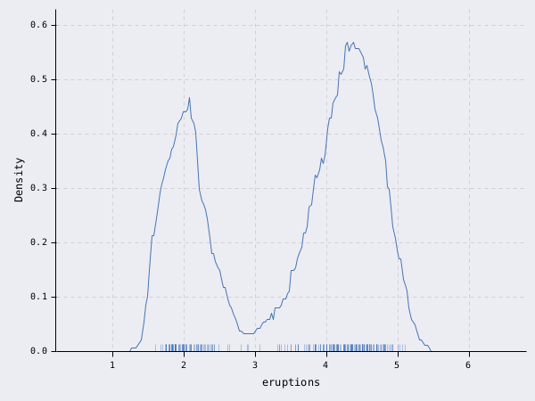
9.3.3 Fig 3.3 Densities by day
Flow cytometry of a graft-versus-host-disease patient: log forward scatter, a panel per day after transplant.
Source: Lattice Fig 3.3. Data: Flow cytometry of a GvHD patient, 10 days, R latticeExtra package gvhd10 (Brinkman et al. 2007); licence: GPL (>= 2) (latticeExtra).
(def gvhd10-log
"gvhd10 with log and log2 forward scatter."
(mapv (fn [{:keys [fsc-h] :as row}] (assoc row :log-fsc (m/log fsc-h) :log2-fsc (m/log2 fsc-h))) gvhd10))(plot/render-image
{:data gvhd10-log
:mapping {:x :log-fsc :facet :days}
:charts [(chart/density)]
:facets {:columns 2}
:labels {:x "log(FSC.H)" :y "Density"}}
{:width 700 :height 750})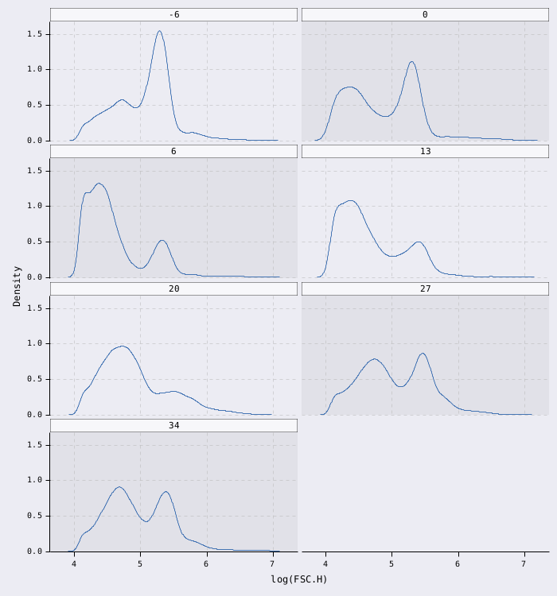
9.3.4 Fig 3.4 Histograms on the density scale
Source: Lattice Fig 3.4. Data: Flow cytometry of a GvHD patient, 10 days, R latticeExtra package gvhd10 (Brinkman et al. 2007); licence: GPL (>= 2) (latticeExtra).
(plot/render-image
{:data gvhd10-log
:mapping {:x :log2-fsc :facet :days}
:charts [(chart/histogram {:bins 50 :y :density})]
:facets {:columns 2}
:labels {:x "log Forward Scatter" :y "Density"}}
{:width 700 :height 750})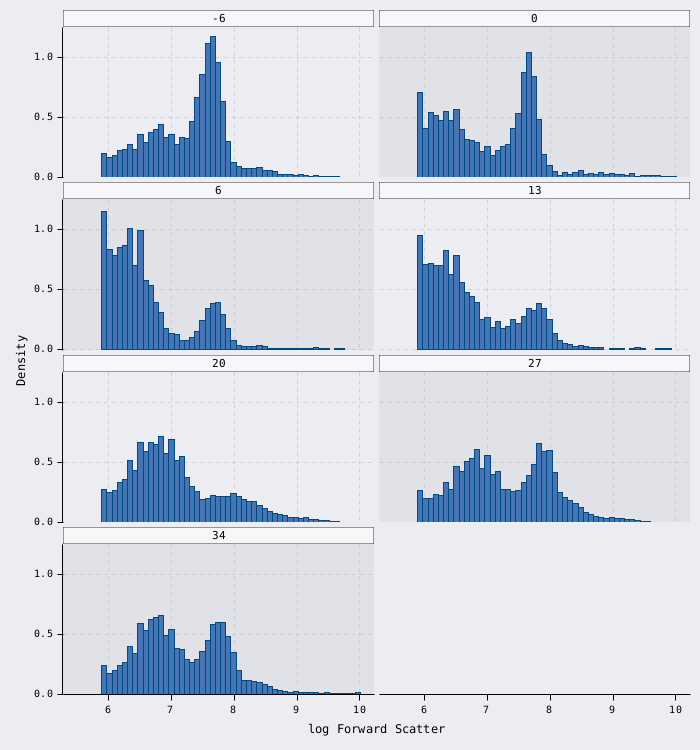
9.3.5 Fig 3.5 Normal Q-Q plots
GCSE score quantiles against the standard normal, a panel per A-level score.
Source: Lattice Fig 3.5. Data: A-level chemistry scores, England 1997, R mlmRev package Chem97 (Yang et al. 2002); licence: GPL (>= 2) (mlmRev).
(plot/render-image
{:data chem97
:mapping {:y :gcsescore :facet :score}
:charts [(chart/qq {:x-distribution [:normal] :size 2 :line false})]
:facets {:columns 3}
:labels {:x "qnorm" :y "gcsescore"}}
{:width 800 :height 500})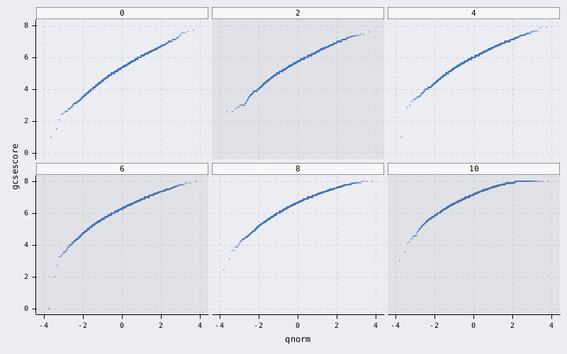
9.3.6 Fig 3.6 Grouped Q-Q plots
Source: Lattice Fig 3.6. Data: A-level chemistry scores, England 1997, R mlmRev package Chem97 (Yang et al. 2002); licence: GPL (>= 2) (mlmRev).
(plot/render-image
{:data chem97
:mapping {:y :gcsescore :color :score :facet :gender}
:scales {:color {:type :categorical}}
:charts [(chart/qq {:x-distribution [:normal] :size 3 :line false})]
:facets {:columns 2}
:labels {:x "Standard Normal Quantiles" :y "Average GCSE Score"}}
{:width 800 :height 450})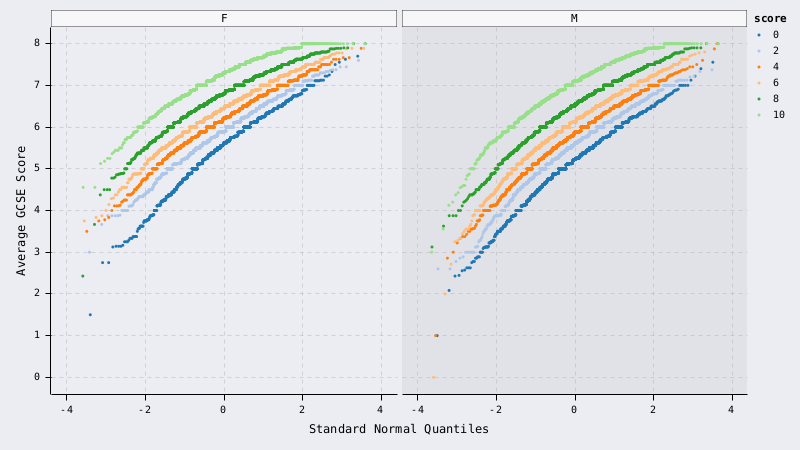
9.3.7 Fig 3.7 A power transformation
GCSE score to the power 2.34 makes the score groups’ quantile curves nearly straight and parallel.
Source: Lattice Fig 3.7. Data: A-level chemistry scores, England 1997, R mlmRev package Chem97 (Yang et al. 2002); licence: GPL (>= 2) (mlmRev).
(def chem97-trans
"chem97 with the transformed GCSE score `gcsescore^2.34`."
(mapv #(assoc % :gcsescore-trans (m/pow (:gcsescore %) 2.34)) chem97))(plot/render-image
{:data chem97-trans
:mapping {:y :gcsescore-trans :color :score :facet :gender}
:scales {:color {:type :categorical :title "score"}}
:charts [(chart/qq {:x-distribution [:normal] :size 3 :line false})]
:facets {:columns 2}
:labels {:x "Standard Normal Quantiles" :y "Transformed GCSE Score"}}
{:width 800 :height 450})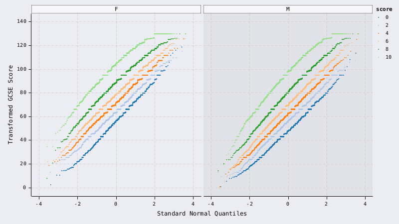
9.3.8 Fig 3.8 Empirical CDFs
Source: Lattice Fig 3.8. Data: A-level chemistry scores, England 1997, R mlmRev package Chem97 (Yang et al. 2002); licence: GPL (>= 2) (mlmRev).
(def chem97-positive (filterv #(pos? (:gcsescore %)) chem97))(plot/render-image
{:data chem97-positive
:mapping {:x :gcsescore :color :gender :facet :score}
:charts [(chart/ecdf)]
:facets {:columns 3}
:labels {:x "Average GCSE Score" :y "Empirical CDF"}}
{:width 800 :height 500})
9.3.9 Fig 3.9 Uniform Q-Q plots
Quantiles against the uniform distribution: the empirical CDF with the axes swapped.
Source: Lattice Fig 3.9. Data: A-level chemistry scores, England 1997, R mlmRev package Chem97 (Yang et al. 2002); licence: GPL (>= 2) (mlmRev).
(plot/render-image
{:data chem97-positive
:mapping {:y :gcsescore :color :gender :facet :score}
:charts [(chart/qq {:x-distribution [:uniform-real] :size 3 :line false})]
:facets {:columns 6}
:labels {:x "Uniform quantiles" :y "Average GCSE Score"}}
{:width 1000 :height 400})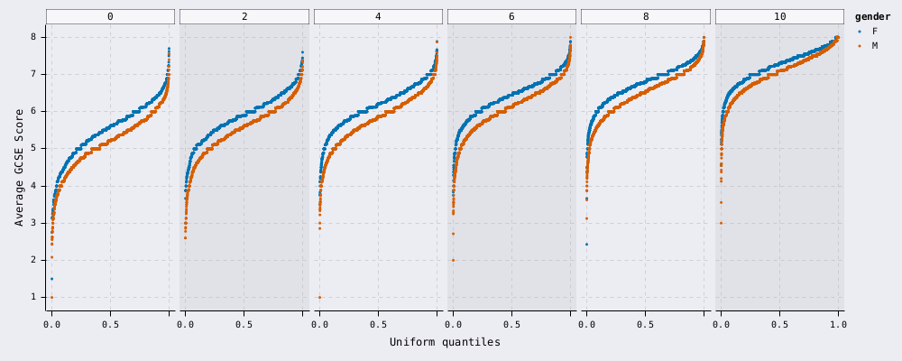
9.3.10 Fig 3.10 Two-sample Q-Q plots
100 quantiles of the boys’ scores against the girls’, per A-level score (ppoints(100) probabilities), and the line y = x.
Source: Lattice Fig 3.10. Data: A-level chemistry scores, England 1997, R mlmRev package Chem97 (Yang et al. 2002); licence: GPL (>= 2) (mlmRev).
(let [ps (mapv #(/ (- % 0.5) 100.0) (range 1 101))
quantiles (fn [rows] (stats/quantiles (map :gcsescore rows) ps))]
(plot/render-image
{:data (for [[score rows] (group-by :score chem97)
:let [by-gender (group-by :gender rows)]
[f m] (map vector (quantiles (by-gender "F")) (quantiles (by-gender "M")))]
{:score score :f f :m m})
:mapping {:x :m :y :f :facet :score}
:charts [(chart/scatter) (chart/rule {:slope 1 :intercept 0 :color :grey})]
:facets {:columns 3}
:aspect :iso
:labels {:x "M" :y "F"}}
{:width 800 :height 600}))
9.3.11 Fig 3.11 Box plots
Source: Lattice Fig 3.11. Data: A-level chemistry scores, England 1997, R mlmRev package Chem97 (Yang et al. 2002); licence: GPL (>= 2) (mlmRev).
(plot/render-image
{:data chem97
:mapping {:x :gcsescore :y (levels/categorical :score) :facet :gender}
:scales {:facet {:domain ["M" "F"]}}
:charts [(chart/box)]
:facets {:columns 2}
:labels {:x "Average GCSE Score" :y "score"}}
{:width 800 :height 450})
9.3.12 Fig 3.12 Box widths by group size
Source: Lattice Fig 3.12. Data: A-level chemistry scores, England 1997, R mlmRev package Chem97 (Yang et al. 2002); licence: GPL (>= 2) (mlmRev).
(plot/render-image
{:data chem97-trans
:mapping {:x :gender :y :gcsescore-trans :facet :score}
:scales {:x {:domain ["M" "F"]}}
:charts [(chart/box {:varwidth true})]
:facets {:columns 6}
:labels {:x nil :y "Transformed GCSE score"}}
{:width 900 :height 400})
9.3.13 Fig 3.13 Box plots of many values
Source: Lattice Fig 3.13. Data: Flow cytometry of a GvHD patient, 10 days, R latticeExtra package gvhd10 (Brinkman et al. 2007); licence: GPL (>= 2) (latticeExtra).
(plot/render-image
{:data gvhd10-log
:mapping {:x :log-fsc :y (levels/categorical :days)}
:charts [(chart/box)]
:labels {:x "log(Forward Scatter)" :y "Days Past Transplant"}}
{:width 700 :height 500})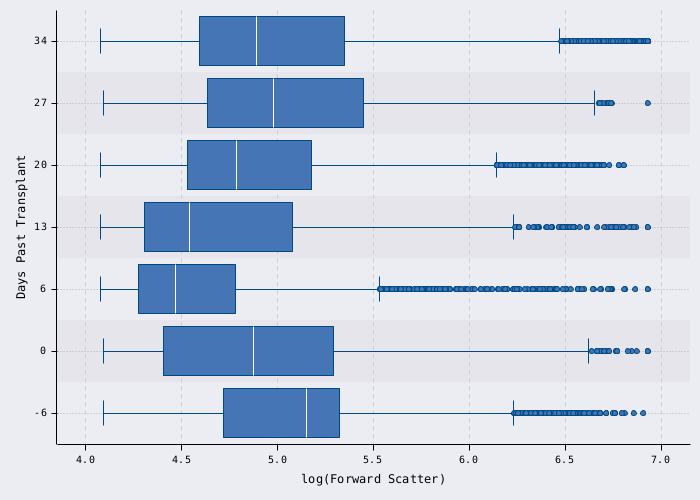
9.3.14 Fig 3.14 Violins
Tails 3 bandwidths past the data (:cut 3, R’s density default as lattice uses it).
Source: Lattice Fig 3.14. Data: Flow cytometry of a GvHD patient, 10 days, R latticeExtra package gvhd10 (Brinkman et al. 2007); licence: GPL (>= 2) (latticeExtra).
(plot/render-image
{:data gvhd10-log
:mapping {:x :log-fsc :y (levels/categorical :days)}
:charts [(chart/violin {:inner :none :cut 3})]
:labels {:x "log(Forward Scatter)" :y "Days Past Transplant"}}
{:width 700 :height 500})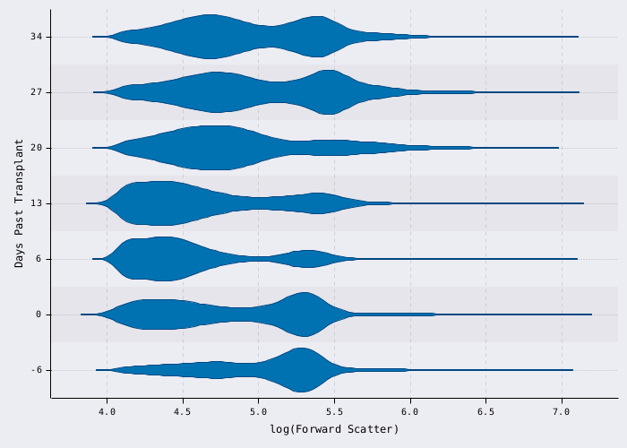
9.3.15 Fig 3.15 Strip plot
Earthquake depth by magnitude, one strip per magnitude value.
Source: Lattice Fig 3.15. Data: Earthquakes off Fiji since 1964, R datasets package quakes (Harvard PRIM-H project); licence: Part of R (GPL-2 | GPL-3).
(plot/render-image
{:data quakes
:mapping {:x :depth :y (levels/categorical :mag)}
:charts [(chart/stripplot {:jitter 0})]
:labels {:x "depth" :y "mag"}}
{:width 600 :height 700})
9.3.16 Fig 3.16 Jittered strips
Source: Lattice Fig 3.16. Data: Earthquakes off Fiji since 1964, R datasets package quakes (Harvard PRIM-H project); licence: Part of R (GPL-2 | GPL-3).
(plot/render-image
{:data quakes
:mapping {:x (levels/categorical :mag) :y :depth}
:charts [(chart/stripplot {:rng (r/rng :mersenne 316) :jitter 0.3})]
:labels {:x "Magnitude (Richter)" :y "Depth (km)"}}
{:width 800 :height 450})
9.3.17 Fig 3.17 Residuals and their medians
Square roots of the absolute residuals of an additive model of barley yield (variety + year + site, least squares on dummy-coded factors), jittered by site (in R’s order), a line through each year’s medians; two contrasting colours for the years.
Source: Lattice Fig 3.17. Data: Barley yields, Minnesota 1931-1932, R lattice package barley (Immer et al. 1934; Fisher 1971; Cleveland 1993); licence: GPL (>= 2) (lattice).
(let [factors [:variety :year :site]
dummies (vec (for [k factors, level (rest (sort (distinct (map k barley))))] [k level]))
model (regression/lm (mapv :yield barley)
(mapv (fn [row] (mapv (fn [[k level]] (if (= level (k row)) 1.0 0.0)) dummies)) barley))
rows (mapv (fn [row residual] (assoc row :root-residual (m/sqrt (m/abs residual))))
barley (get-in model [:residuals :raw]))
by-site-year (group-by (juxt :site :year) rows)
;; in the axis's site order, so each year's line runs left to right
sites (nu/levels :barley :site)
medians (for [site sites year [1931 1932]]
{:site site :year year :median (stats/median (map :root-residual (by-site-year [site year])))})]
(plot/render-image
{:data rows
:mapping {:x :site :y :root-residual :color :year}
:scales {:x {:domain sites} :color {:type :categorical :range [[31 119 180] [214 39 40]]}}
:charts [(chart/stripplot {:rng (r/rng :mersenne 317)})
(chart/line {:data medians :mapping {:y :median}})]
:labels {:x nil :y "√|Residual Barley Yield|"}}
{:width 800 :height 450}))
9.4 Chapter 4 - Displaying Multiway Tables
9.4.1 Fig 4.1 Dot plot of a table
Virginia death rates (1940) per 1000 by age group, a panel per population group.
Source: Lattice Fig 4.1. Data: Death rates in Virginia (1940), R datasets package VADeaths (Molyneaux et al. 1947); licence: Part of R (GPL-2 | GPL-3).
(plot/render-image
{:data va-deaths
:mapping {:x :rate :y :age :facet :group}
:charts [(chart/scatter)]
:facets {:columns 2}
:labels {:x "Freq" :y nil}}
{:width 700 :height 450})
9.4.2 Fig 4.2 Stems from zero
Source: Lattice Fig 4.2. Data: Death rates in Virginia (1940), R datasets package VADeaths (Molyneaux et al. 1947); licence: Part of R (GPL-2 | GPL-3).
(plot/render-image
{:data va-deaths
:mapping {:x :rate :y :age :facet :group}
:charts [(chart/segment {:xend 0}) (chart/scatter)]
:facets {:columns 1}
:labels {:title "Death Rates in Virginia - 1940" :x "Rate (per 1000)" :y nil}}
{:width 450 :height 750})
9.4.3 Fig 4.3 Groups joined
One line per population group across the age groups (the rows in age order, unsorted by rate).
Source: Lattice Fig 4.3. Data: Death rates in Virginia (1940), R datasets package VADeaths (Molyneaux et al. 1947); licence: Part of R (GPL-2 | GPL-3).
(plot/render-image
{:data (sort-by :age va-deaths)
:mapping {:x :rate :y :age :color :group}
:charts [(chart/line {:sort false}) (chart/scatter)]
:labels {:title "Death Rates in Virginia - 1940" :x "Rate (per 1000)" :y nil}}
{:width 700 :height 450})
9.4.4 Fig 4.4 Bar charts
Source: Lattice Fig 4.4. Data: Death rates in Virginia (1940), R datasets package VADeaths (Molyneaux et al. 1947); licence: Part of R (GPL-2 | GPL-3).
(plot/render-image
{:data va-deaths
:mapping {:x :rate :y :age :facet :group}
:charts [(chart/bar)]
:facets {:columns 1}
:labels {:title "Death Rates in Virginia - 1940" :x "Rate (per 1000)" :y nil}}
{:width 450 :height 750})
9.4.5 Fig 4.5 Proportions as stacked bars
Reasons for taking a postdoctoral position, as proportions of each field (:position :normalize), in R’s order.
Source: Lattice Fig 4.5. Data: Reasons for taking a postdoc, by field, R latticeExtra package postdoc (NSF Survey of Doctorate Recipients 1999); licence: GPL (>= 2) (latticeExtra).
(plot/render-image
{:data postdoc
:mapping {:x :count :y :field :color :reason}
:scales {:color {:domain (nu/levels :postdoc :reason)}}
:charts [(chart/bar {:position :normalize})]
:labels {:x "Proportion" :y nil}}
{:width 900 :height 450})
9.4.6 Fig 4.6 Proportions as dot plots
Source: Lattice Fig 4.6. Data: Reasons for taking a postdoc, by field, R latticeExtra package postdoc (NSF Survey of Doctorate Recipients 1999); licence: GPL (>= 2) (latticeExtra).
(def postdoc-proportions
"postdoc counts as proportions of each field's total."
(let [totals (update-vals (group-by :field postdoc) #(reduce + (map :count %)))]
(mapv #(assoc % :proportion (/ (double (:count %)) (double (totals (:field %))))) postdoc)))(plot/render-image
{:data postdoc-proportions
:mapping {:x :proportion :y :field :facet :reason}
:charts [(chart/scatter)]
:facets {:columns 3}
:labels {:x "Proportion" :y nil}}
{:width 1000 :height 550})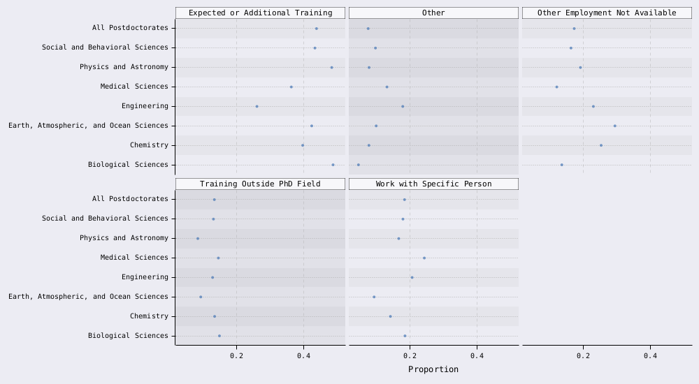
9.4.7 Fig 4.7 Ordered panels and levels
Panels ordered by their median proportion, the fields within each panel by their proportion (free y scales).
Source: Lattice Fig 4.7. Data: Reasons for taking a postdoc, by field, R latticeExtra package postdoc (NSF Survey of Doctorate Recipients 1999); licence: GPL (>= 2) (latticeExtra).
(plot/render-image
{:data postdoc-proportions
:mapping {:x :proportion :y :field :facet :reason}
:scales {:facet {:order-by #(stats/median (map :proportion %)) :descending true}
:y {:order-by #(stats/mean (map :proportion %))}}
:charts [(chart/scatter)]
:facets {:columns 1 :scales {:y :free}}
:labels {:x "Proportion" :y nil}}
{:width 600 :height 800})
9.4.8 Fig 4.8 Frequencies as spikes
How many candidates have each average GCSE score, by gender.
Source: Lattice Fig 4.8. Data: A-level chemistry scores, England 1997, R mlmRev package Chem97 (Yang et al. 2002); licence: GPL (>= 2) (mlmRev).
(plot/render-image
{:data (for [[[score gender] n] (frequencies (map (juxt :gcsescore :gender) chem97))]
{:gcsescore score :gender gender :freq n})
:mapping {:x :gcsescore :y :freq :facet :gender}
:charts [(chart/segment {:yend 0})]
:facets {:columns 1}
:labels {:x "Average GCSE Score" :y "Freq"}}
{:width 800 :height 500})
9.4.9 Fig 4.9 Bar chart of counts
Source: Lattice Fig 4.9. Data: A-level chemistry scores, England 1997, R mlmRev package Chem97 (Yang et al. 2002); licence: GPL (>= 2) (mlmRev).
(plot/render-image
{:data chem97
:mapping {:y (levels/categorical :score) :facet :gender}
:scales {:facet {:domain ["M" "F"]}}
:charts [(chart/bar {:stat :count})]
:flip true
:facets {:columns 2}
:labels {:x "Freq" :y "score"}}
{:width 800 :height 400})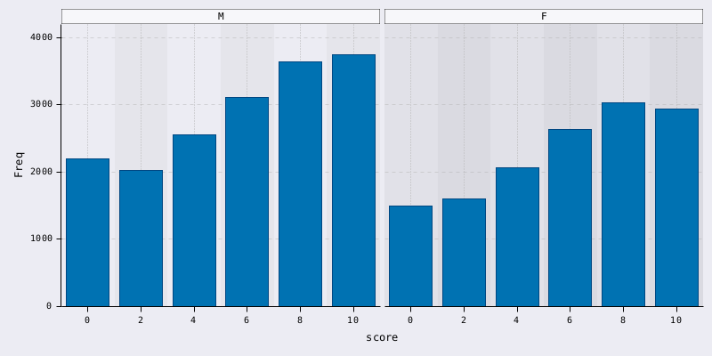
9.5 Chapter 5 - Scatter Plots and Extensions
9.5.1 Fig 5.1 Conditioning on a cut numeric variable
Earthquake epicentres off Fiji, a panel per depth interval (two equal-width intervals, levels/bin).
Source: Lattice Fig 5.1. Data: Earthquakes off Fiji since 1964, R datasets package quakes (Harvard PRIM-H project); licence: Part of R (GPL-2 | GPL-3).
(plot/render-image
{:data (levels/bin quakes :depth {:as :depth-cut :bins 2})
:mapping {:x :long :y :lat :facet :depth-cut}
:charts [(chart/scatter {:shape \o :size 5})]
:facets {:columns 2}
:labels {:x "long" :y "lat"}}
{:width 800 :height 450})
9.5.2 Fig 5.2 Three depth intervals, isometric
Source: Lattice Fig 5.2. Data: Earthquakes off Fiji since 1964, R datasets package quakes (Harvard PRIM-H project); licence: Part of R (GPL-2 | GPL-3).
(plot/render-image
{:data (levels/bin quakes :depth {:as :depth-cut :bins 3 :label "Depth"})
:mapping {:x :long :y :lat :facet :depth-cut}
:charts [(chart/scatter {:size 4})]
:facets {:columns 3}
:aspect :iso
:labels {:x "Longitude" :y "Latitude"}}
{:width 900 :height 450})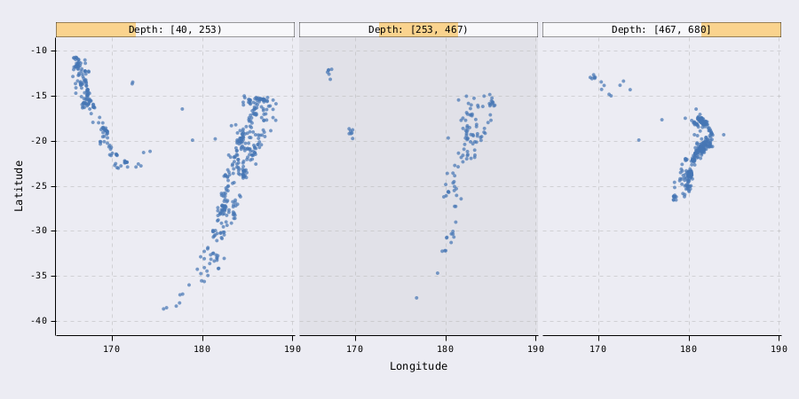
9.5.3 Fig 5.3 Depth as groups
Depth cut at its terciles: three groups of equal size, coloured.
Source: Lattice Fig 5.3. Data: Earthquakes off Fiji since 1964, R datasets package quakes (Harvard PRIM-H project); licence: Part of R (GPL-2 | GPL-3).
(plot/render-image
{:data (levels/bin quakes :depth {:as :depth-cut :bins {:quantiles 3}})
:mapping {:x :long :y :lat :color :depth-cut}
:scales {:color {:title "Depth"}}
:charts [(chart/scatter {:size 4})]
:aspect :iso
:labels {:x "Longitude" :y "Latitude"}}
{:width 650 :height 650})
9.5.4 Fig 5.4 Depth as grey levels
Filled circles from dark (shallow) to light (deep); the deepest drawn first, so shallow ones stay on top.
Source: Lattice Fig 5.4. Data: Earthquakes off Fiji since 1964, R datasets package quakes (Harvard PRIM-H project); licence: Part of R (GPL-2 | GPL-3).
(def quakes-by-depth
"quakes, deepest first."
(vec (sort-by :depth > quakes)))(def grey-depth
"Colour scale of depth: grey levels as R's `gray.colors`, dark for shallow."
{:color {:range [[77 77 77] [230 230 230]] :title "depth"}})(plot/render-image
{:data quakes-by-depth
:mapping {:x :long :y :lat :color :depth}
:scales grey-depth
:charts [(chart/scatter {:size 8 :stroke-color :black :stroke-width 0.5})]
:aspect :iso
:legend false
:labels {:x "Longitude" :y "Latitude"}}
{:width 600 :height 650})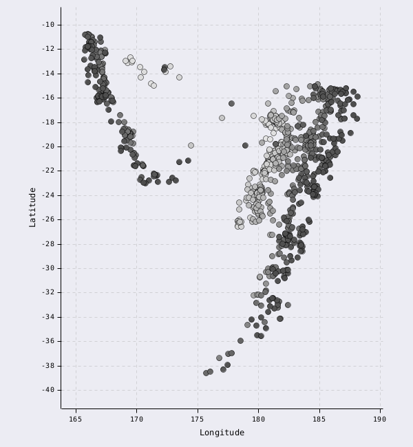
9.5.5 Fig 5.5 Grey levels by magnitude
A panel per magnitude interval: a shingle of four equal-count, half-overlapping intervals.
Source: Lattice Fig 5.5. Data: Earthquakes off Fiji since 1964, R datasets package quakes (Harvard PRIM-H project); licence: Part of R (GPL-2 | GPL-3).
(def quakes-magnitude
(shingle/shingle quakes-by-depth :mag {:count 4 :overlap 0.5 :as :magnitude :label "Magnitude"}))(plot/render-image
{:data quakes-magnitude
:mapping {:x :long :y :lat :color :depth :facet :magnitude}
:scales grey-depth
:charts [(chart/scatter {:size 7 :stroke-color :black :stroke-width 0.5})]
:facets {:columns 2}
:aspect :iso
:legend false
:labels {:x "Longitude" :y "Latitude"}}
{:width 700 :height 800})
9.5.6 Fig 5.6 With a colour key
Source: Lattice Fig 5.6. Data: Earthquakes off Fiji since 1964, R datasets package quakes (Harvard PRIM-H project); licence: Part of R (GPL-2 | GPL-3).
(plot/render-image
{:data quakes-magnitude
:mapping {:x :long :y :lat :color :depth :facet :magnitude}
:scales grey-depth
:charts [(chart/scatter {:size 7 :stroke-color :black :stroke-width 0.5})]
:facets {:columns 2}
:aspect :iso
:labels {:x "Longitude" :y "Latitude"}}
{:width 750 :height 800})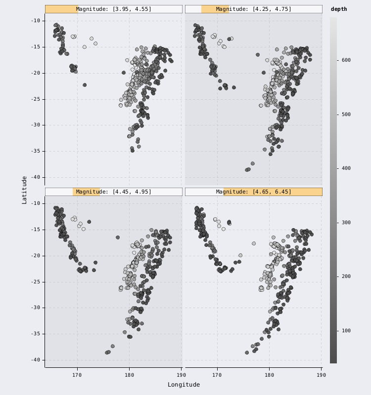
9.5.7 Fig 5.7 Plot types
Lattice’s type argument drawn with cljplot2 charts on one seeded data set: points, lines in data order, both, a regression line, the grid alone, steps (two kinds), stems, averages per x, a loess curve. The bottom row repeats the last five with x and y exchanged (lattice’s horizontal = TRUE): the same charts of the swapped columns in a :flip plot.
Source: Lattice Fig 5.7.
(let [rng (r/rng :mersenne 2007041)
grid-xs (mapv #(+ -10.0 (* 20.0 (/ % 14.0))) (range 15))
xy (vec (for [_ (range 30)
:let [x (grid-xs (r/irandom rng 15))]]
{:x x :y (+ x (* 0.25 (m/sq (+ x 1.0))) (r/grandom rng 0.0 5.0))}))
sorted (sort-by :x xy)
steps (fn [corner] (concat (mapcat (fn [a b] [a (corner a b)]) sorted (rest sorted)) [(last sorted)]))
averages (for [[x rs] (sort-by key (group-by :x xy))] {:x x :y (stats/mean (map :y rs))})
types [["p" xy [(chart/scatter)]]
["l" xy [(chart/line {:sort false})]]
["o" xy [(chart/line {:sort false}) (chart/scatter)]]
["r" xy [(chart/smooth {:method :lm :band :none})]]
["g" xy [(chart/scatter {:color [0 0 0 0]})]]
["s" (steps (fn [a b] {:x (:x b) :y (:y a)})) [(chart/line {:sort false})]]
["S" (steps (fn [a b] {:x (:x a) :y (:y b)})) [(chart/line {:sort false})]]
["h" xy [(chart/segment {:yend 0})]]
["a" averages [(chart/line)]]
["smooth" xy [(chart/smooth {:band :none})]]]
panel (fn [[title data charts]]
{:data data :mapping {:x :x :y :y} :charts charts
:labels {:title (str "\"" title "\"") :x nil :y nil}})
swapped (mapv (fn [{:keys [x y]}] {:x y :y x}) xy)]
(plot/render-image
(plot/arrange (concat (map panel types)
;; horizontal: the same charts of the swapped columns, drawn flipped
(for [[title _ charts] (drop 5 types)
:let [sorted (sort-by :x swapped)
data (case title
"s" (concat (mapcat (fn [a b] [a {:x (:x b) :y (:y a)}]) sorted (rest sorted)) [(last sorted)])
"S" (concat (mapcat (fn [a b] [a {:x (:x a) :y (:y b)}]) sorted (rest sorted)) [(last sorted)])
"a" (for [[x rs] (sort-by key (group-by :x swapped))] {:x x :y (stats/mean (map :y rs))})
swapped)]]
(assoc (panel [(str title ", horizontal") data charts]) :flip true)))
{:columns 5})
{:width 1000 :height 650}))
9.5.8 Fig 5.8 Scatter plot with a loess curve
Peak ground acceleration against distance from the epicentre, for 23 Californian earthquakes.
Source: Lattice Fig 5.8. Data: Western US earthquakes: ground acceleration, R MEMSS package Earthquake (Joyner & Boore 1981); licence: GPL (>= 2) (MEMSS).
(def earthquake-labels {:x "Distance From Epicenter (km)" :y "Maximum Horizontal Acceleration (g)"})(plot/render-image
{:data earthquake
:mapping {:x :distance :y :accel}
:charts [(chart/scatter) (chart/smooth {:band :none})]
:labels earthquake-labels}
{:width 650 :height 500})
9.5.9 Fig 5.9 Logarithmic axes
Source: Lattice Fig 5.9. Data: Western US earthquakes: ground acceleration, R MEMSS package Earthquake (Joyner & Boore 1981); licence: GPL (>= 2) (MEMSS).
(def log2-axes
"Base-2 logarithmic x and y scales labelled as powers of two."
{:x {:kind :log :base 2 :formatter :power} :y {:kind :log :base 2 :formatter :power}})(plot/render-image
{:data earthquake
:mapping {:x :distance :y :accel}
:scales log2-axes
:charts [(chart/scatter) (chart/smooth {:band :none})]
:labels earthquake-labels}
{:width 650 :height 500})
9.5.10 Fig 5.10 Local fits by magnitude
A panel per magnitude interval (three equal-count intervals overlapping by 10 %): a loess curve per panel (the book uses locfit) and the least-squares line of all quakes on the log-log scale, the same in every panel.
Source: Lattice Fig 5.10. Data: Western US earthquakes: ground acceleration, R MEMSS package Earthquake (Joyner & Boore 1981); licence: GPL (>= 2) (MEMSS).
(let [model (regression/lm (mapv #(m/log2 (:accel %)) earthquake) (mapv (fn [row] [(m/log2 (:distance row))]) earthquake))
intercept (:intercept model)
slope (first (:beta model))]
(plot/render-image
{:data (shingle/shingle earthquake :richter {:count 3 :overlap 0.1 :as :magnitude :label "Magnitude"})
:mapping {:x :distance :y :accel :facet :magnitude}
:scales log2-axes
:charts [(chart/scatter)
(chart/smooth {:band :none :color :grey :width 2})
(chart/function {:f (fn [d] (m/pow 2.0 (+ intercept (* slope (m/log2 d))))) :color :black})]
:facets {:columns 3}
:labels earthquake-labels}
{:width 900 :height 400}))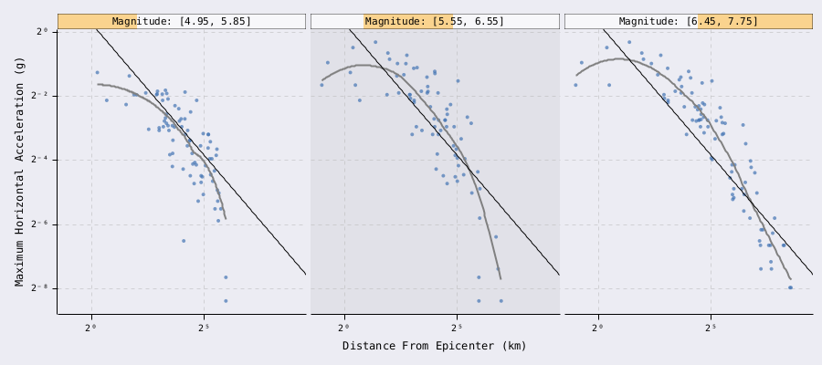
9.5.11 Fig 5.11 Several variables against one
Seattle-Tacoma weather, January to March 2007: minimum and maximum temperature and rainfall by day.
Source: Lattice Fig 5.11. Data: Seattle-Tacoma airport weather, Jan-Mar 2007, R latticeExtra package SeatacWeather (NOAA); licence: GPL (>= 2) (latticeExtra).
(def months {:facet {:domain ["January" "February" "March"]}})(def seatac-long
"SeaTac weather, one row per day and variable."
(for [row seatac, k [:min-temp :max-temp :precip]]
{:month (:month row) :day (:day row) :variable (name k) :value (k row)}))(plot/render-image
{:data seatac-long
:mapping {:x :day :y :value :group :variable :facet :month}
:scales months
:charts [(chart/line {:color :black})]
:facets {:columns 3}
:labels {:x "day" :y "Temperature and Rainfall"}}
{:width 900 :height 400})
9.5.12 Fig 5.12 Lines and stems
Rainfall scaled to the temperature range (× 80 / its maximum) and drawn as stems.
Source: Lattice Fig 5.12. Data: Seattle-Tacoma airport weather, Jan-Mar 2007, R latticeExtra package SeatacWeather (NOAA); licence: GPL (>= 2) (latticeExtra).
(def max-precip (reduce max (keep :precip seatac)))(plot/render-image
{:data seatac
:mapping {:x :day :facet :month}
:scales months
:charts [(chart/line {:mapping {:y :min-temp} :color :black})
(chart/line {:mapping {:y :max-temp} :color :black})
(chart/segment {:data (map #(update % :precip (fn [p] (some-> p (* 80.0) (/ max-precip)))) seatac)
:mapping {:y :precip} :yend 0 :color :black})]
:facets {:columns 3}
:labels {:x "day" :y "Temperature and Rainfall"}}
{:width 900 :height 400})
9.5.13 Fig 5.13 Temperature and rainfall, each on its own axis
The book adds a rainfall axis on the right of one panel; cljplot2 has no secondary axes, so the two measures are two plots - each with its own axis.
Source: Lattice Fig 5.13. Data: Seattle-Tacoma airport weather, Jan-Mar 2007, R latticeExtra package SeatacWeather (NOAA); licence: GPL (>= 2) (latticeExtra).
(plot/render-image
(plot/arrange [{:data (filter #(not= "precip" (:variable %)) seatac-long)
:mapping {:x :day :y :value :group :variable :facet :month}
:scales months
:charts [(chart/line {:color :black})]
:facets {:columns 3}
:labels {:x nil :y "Temperature (Fahrenheit)"}}
{:data seatac
:mapping {:x :day :y :precip :facet :month}
:scales months
:charts [(chart/segment {:yend 0 :color :black})]
:facets {:columns 3}
:labels {:x "day" :y "Rainfall (inches)"}}]
{:columns 1})
{:width 900 :height 600})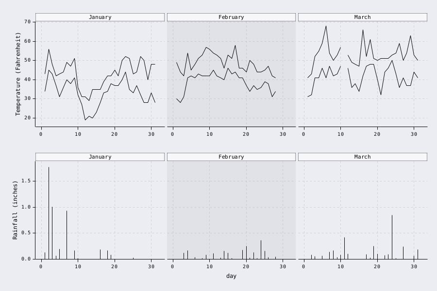
9.5.14 Fig 5.14 Hexagonal binning
Two fluorescence channels of the GvHD cells (asinh-transformed), counted in hexagons, a panel per day; grey levels by the square root of the count (:transform :sqrt, lattice’s trans = sqrt).
Source: Lattice Fig 5.14. Data: Flow cytometry of a GvHD patient, 10 days, R latticeExtra package gvhd10 (Brinkman et al. 2007); licence: GPL (>= 2) (latticeExtra).
(plot/render-image
{:data (mapv (fn [row] {:days (:days row) :ssc (m/asinh (:ssc-h row)) :fl2 (m/asinh (:fl2-h row))}) gvhd10)
:mapping {:x :fl2 :y :ssc :facet :days}
:scales {:x {:domain [0 10.5]} :color {:range [[200 200 200] [0 0 0]] :transform :sqrt}}
:charts [(chart/bin2d {:bins 30})]
:facets {:columns 4}
:aspect :iso
:labels {:x "asinh(FL2.H)" :y "asinh(SSC.H)"}}
{:width 900 :height 550})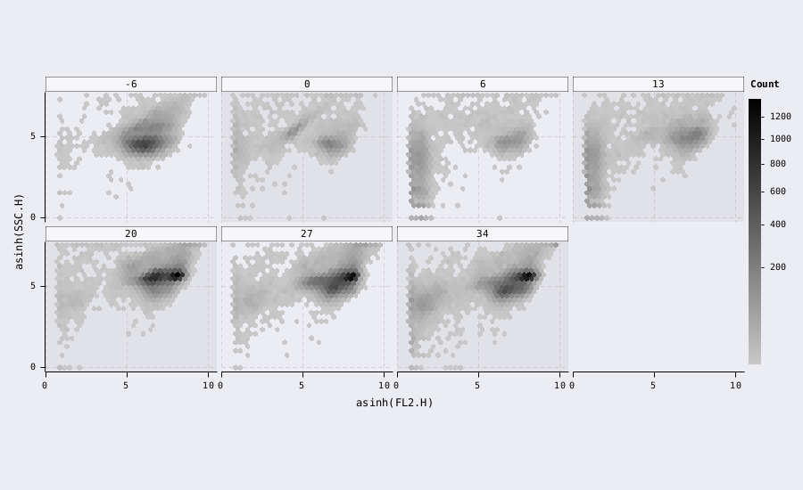
9.5.15 Fig 5.15 Scatter-plot matrix
Source: Lattice Fig 5.15. Data: Violent crime rates by US state (1973), R datasets package USArrests (McNeil 1977); licence: Part of R (GPL-2 | GPL-3).
(plot/render-image
(plot/pairs us-arrests {:variables [:murder :assault :urban-pop :rape]
:upper (chart/scatter) :diagonal :names})
{:width 700 :height 700})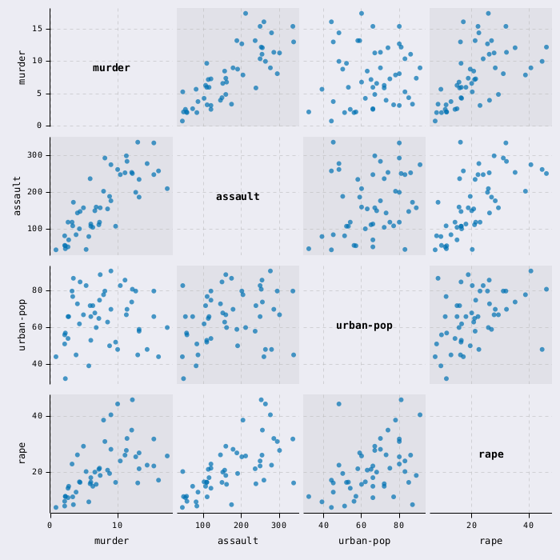
9.5.16 Fig 5.16 A matrix per region
Arrest rates of the states of each census region (joined from the state facts): points and a loess curve with lattice’s panel.loess settings (span 2/3, degree 1) - with a dozen states per region, ggplot2’s degree 2 bends.
Source: Lattice Fig 5.16. Data: Violent crime rates by US state (1973), R datasets package USArrests (McNeil 1977); licence: Part of R (GPL-2 | GPL-3).
(let [region (into {} (map (juxt :name :region) states))
rows (map #(assoc % :region (region (:state %))) us-arrests)
cell [(chart/scatter {:size 3}) (chart/smooth {:band :none :method-params {:bandwidth (/ 2.0 3.0) :degree 1}})]]
(plot/render-image
(plot/arrange (for [r ["Northeast" "South" "North Central" "West"]]
(plot/pairs (filterv #(= r (:region %)) rows)
{:variables [:urban-pop :murder :assault :rape]
:lower cell :upper cell :diagonal :names :title r}))
{:columns 2})
{:width 900 :height 800}))
9.5.17 Fig 5.17 Groups in a scatter-plot matrix
Source: Lattice Fig 5.17. Data: Motor Trend car road tests (1974), R datasets package mtcars (Henderson & Velleman 1981); licence: Part of R (GPL-2 | GPL-3).
(plot/render-image
(plot/pairs mtcars {:variables [:mpg :disp :hp :drat :wt :qsec]
:mapping {:color (levels/categorical :cyl)}
:upper (chart/scatter) :diagonal :names
:labels {:mpg "Miles/gallon" :disp "Displacement" :hp "Horsepower"
:drat "Axle ratio" :wt "Weight" :qsec "1/4 mile time"}})
{:width 900 :height 800})
9.5.18 Fig 5.18 Parallel coordinates
Six car variables, a panel per cylinder count, coloured by the number of carburettors.
Source: Lattice Fig 5.18. Data: Motor Trend car road tests (1974), R datasets package mtcars (Henderson & Velleman 1981); licence: Part of R (GPL-2 | GPL-3).
(plot/render-image
{:data mtcars
:mapping {:color (levels/categorical :carb) :facet :cyl}
:charts [(chart/parallel {:variables [:mpg :disp :hp :drat :wt :qsec]})]
:facets {:columns 3}
:flip true
:labels {:x nil :y nil}}
{:width 900 :height 500})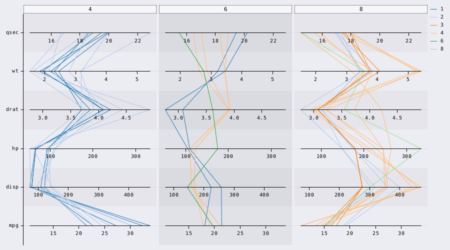
9.5.19 Fig 5.19 Many translucent lines
The cells of day 13 (asinh-transformed channels), each a nearly transparent line (colour alpha 3 of 255).
Source: Lattice Fig 5.19. Data: Flow cytometry of a GvHD patient, 10 days, R latticeExtra package gvhd10 (Brinkman et al. 2007); licence: GPL (>= 2) (latticeExtra).
(plot/render-image
{:data (for [row gvhd10 :when (= 13 (:days row))]
(update-vals (select-keys row [:fl1-h :ssc-h :fl2-h :fsc-h :fl3-h]) m/asinh))
:charts [(chart/parallel {:variables [:fl1-h :ssc-h :fl2-h :fsc-h :fl3-h] :color [140 40 40 3]})]
:flip true
:labels {:x nil :y nil}}
{:width 700 :height 600})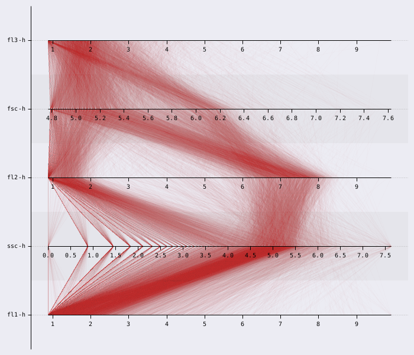
9.6 Chapter 6 - Trivariate Displays
Not reproduced: Fig 6.5 (a 3D map), Figs 6.16 and 6.17 (copula densities - not in fastmath).
9.7 Chapter 7 - Graphical Parameters and Other Settings
Not reproduced: Fig 7.4 (lattice’s own graphical settings).
9.8 Chapter 8 - Plot Coordinates and Axis Annotation
9.9 Chapter 9 - Labels and Legends
9.11 Chapter 11 - Manipulating the trellis Object
9.12 Chapter 13 - Advanced Panel Functions
Not reproduced: Figs 13.8 - 13.10 (maps).
9.13 Chapter 14 - New Trellis Displays
source: notebooks/galleries/lattice.clj